As oficinas CSOM são espaços de aprendizagem, partilha e experimentação. Abertas a todas as pessoas com ou sem experiência em eletrónica.


Constrói a tua Mixer
25 de Maio 2025
Atelier Formigueiro, Almada
Nesta oficina vamos aprender a construir uma mixer passiva de 4 canais. Uma mixer passiva não precisa de fonte de alimentação e permite combinar vários sinais de áudio numa única saída. Com resistências e potenciómetros, vamos soldar e construir uma mixer portátil que podes levar para qualquer lado.

 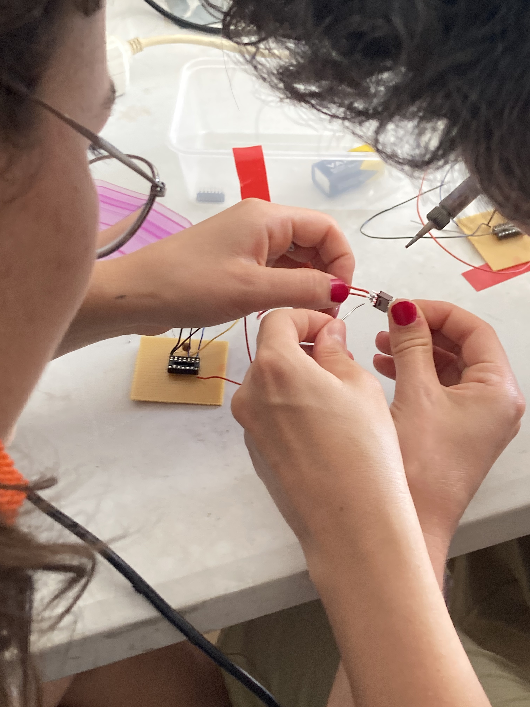
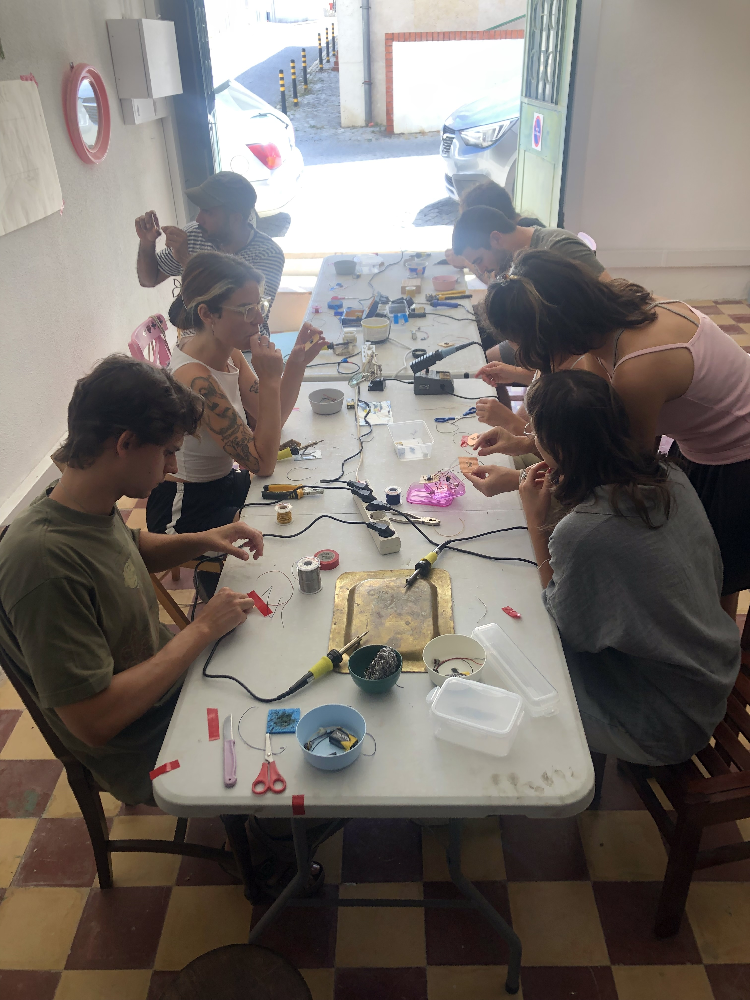
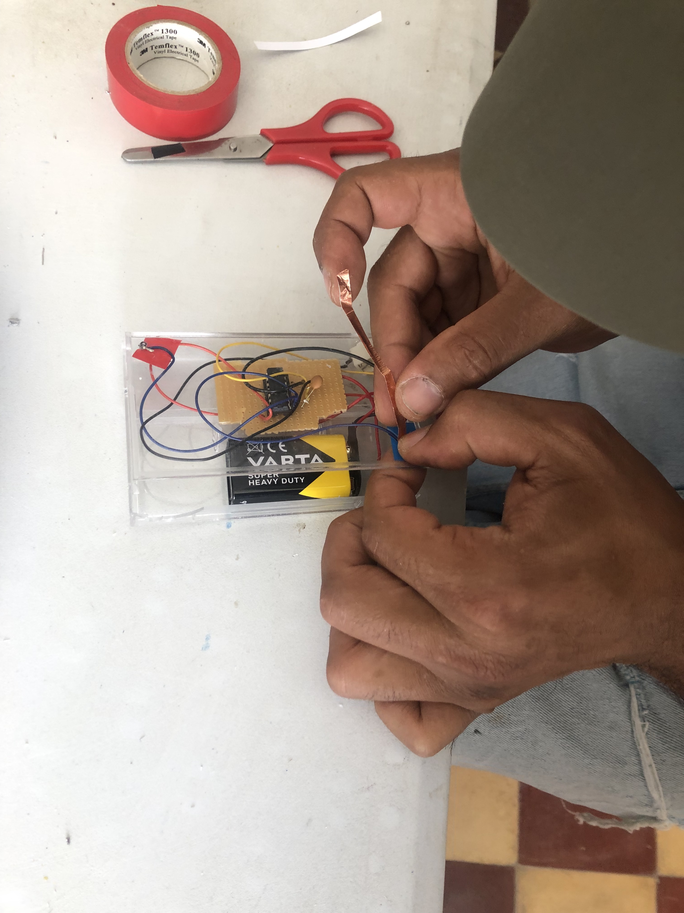
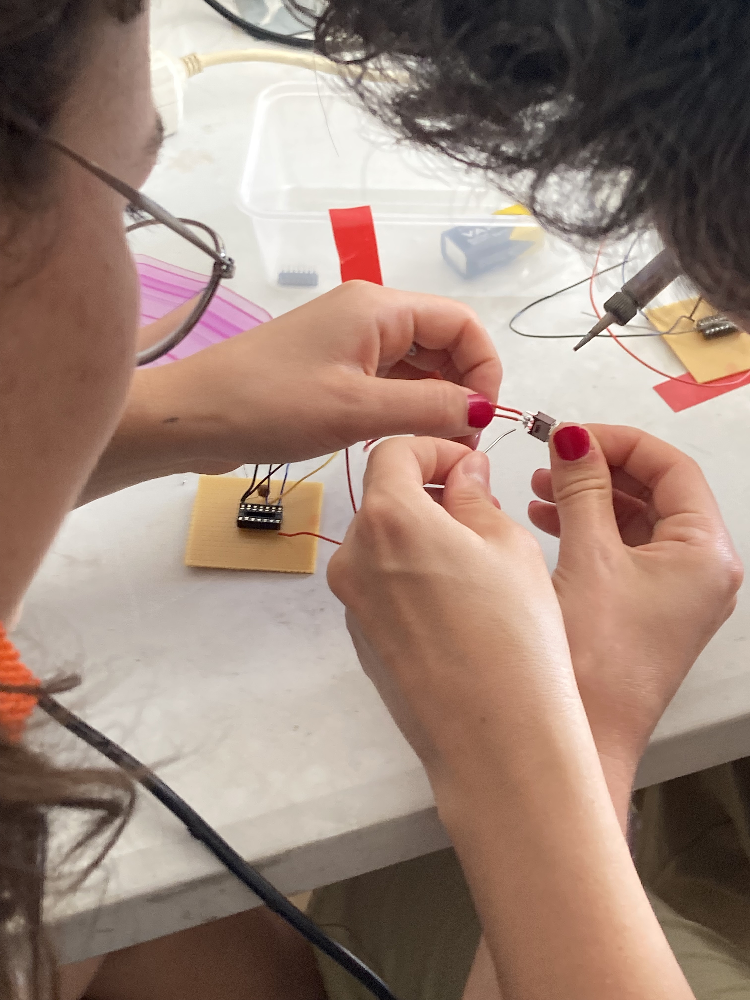
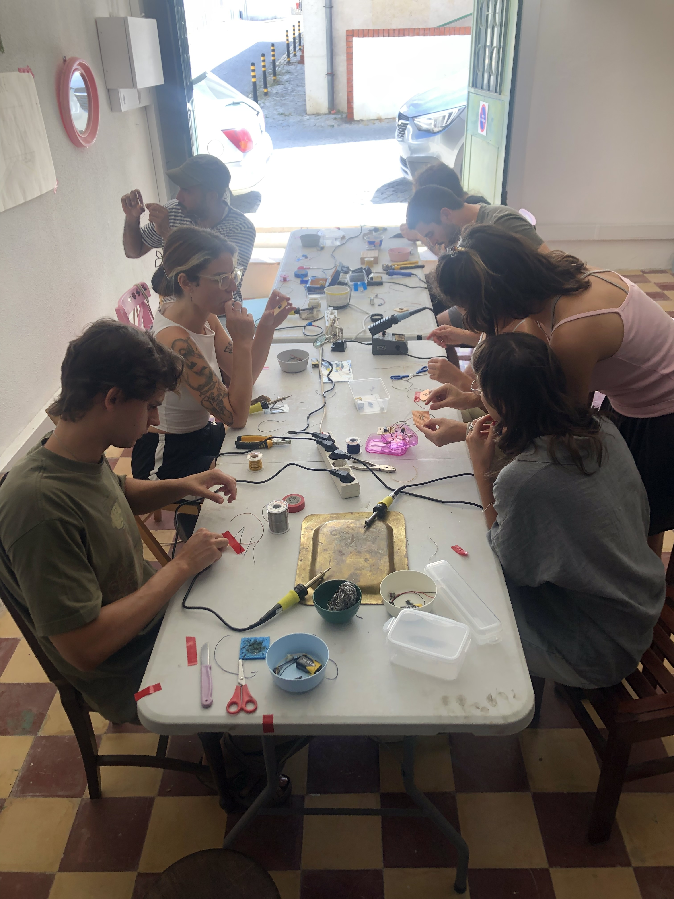
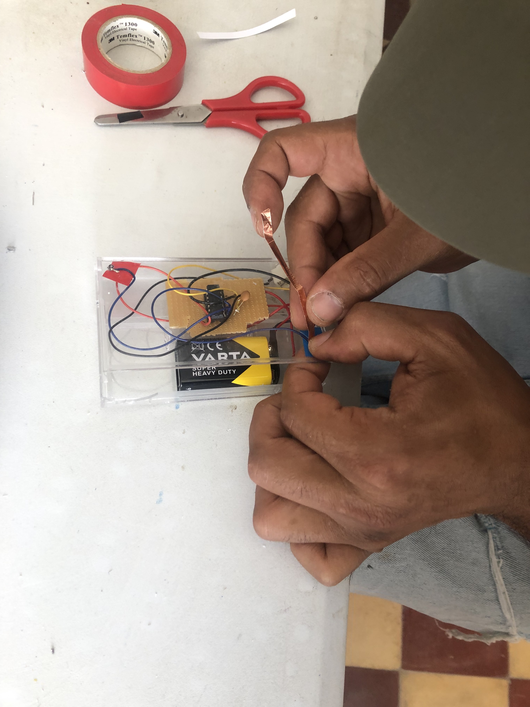


SYNTH TOKE
6 de Julho 2025
Atelier Formigueiro, Almada
TOKE é um synth tocado através da ligação entre duas ou mais fitas de cobre, na qual o teu corpo é o condutor da eletricidade. Quanto maior for o contacto da tua pele com o TOKE, mais intenso será o som. Com a fita de cobre, vamos desenhar diferentes circuitos e experimentar diferentes tons e volumes de som. Podes também fazer experiências com amigues e formar uma corrente de resistência onde os corpos conduzem o som.

 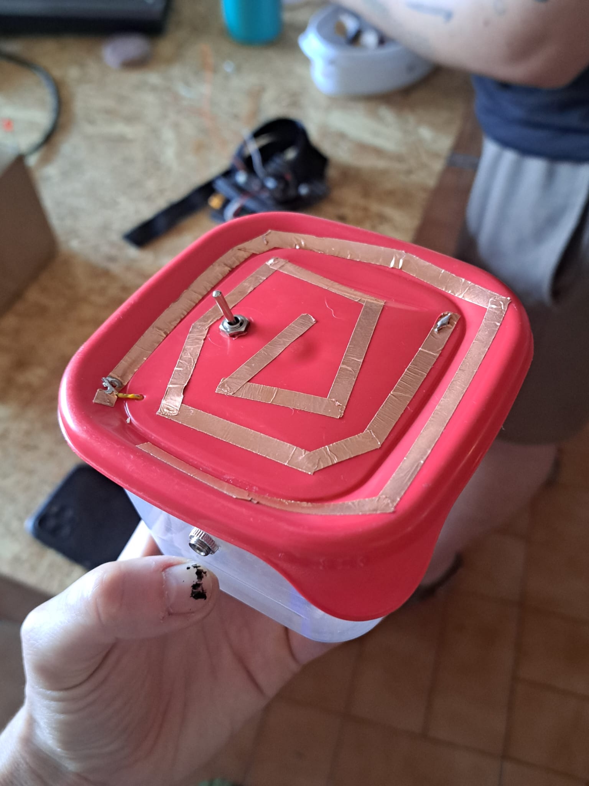
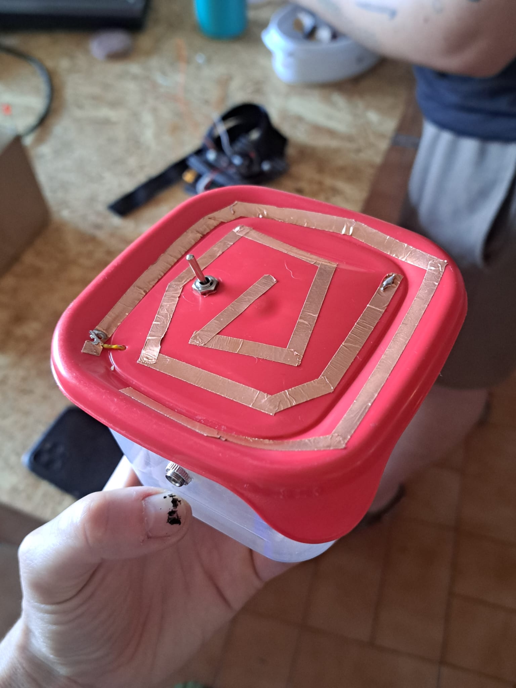


SYNTH TOKE
6 de Agosto 2025
Armazém Pedreira, Porto
TOKE é um synth tocado através da ligação entre duas ou mais fitas de cobre, na qual o teu corpo é o condutor da eletricidade. Quanto maior for o contacto da tua pele com o TOKE, mais intenso será o som. Com a fita de cobre, vamos desenhar diferentes circuitos e experimentar diferentes tons e volumes de som. Podes também fazer experiências com amigues e formar uma corrente de resistência onde os corpos conduzem o som. Com um chip CMOS, condensadores e fitas de cobre, vamos soldar e construir o TOKE. É alimentado com uma pilha de 9 Volts e tem uma saída mini-jack para poderes ligar directamente a uma coluna ou a pedais de efeitos.

 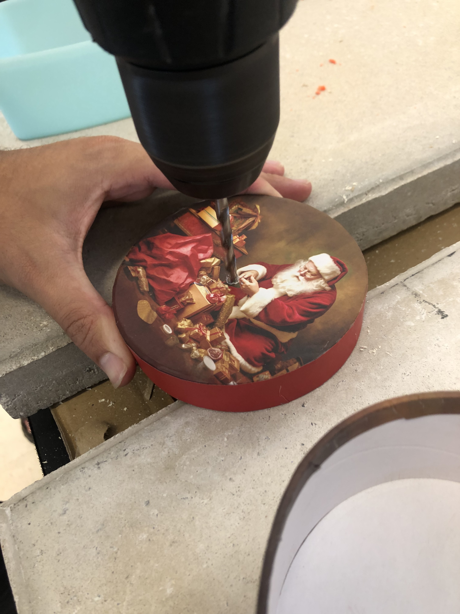
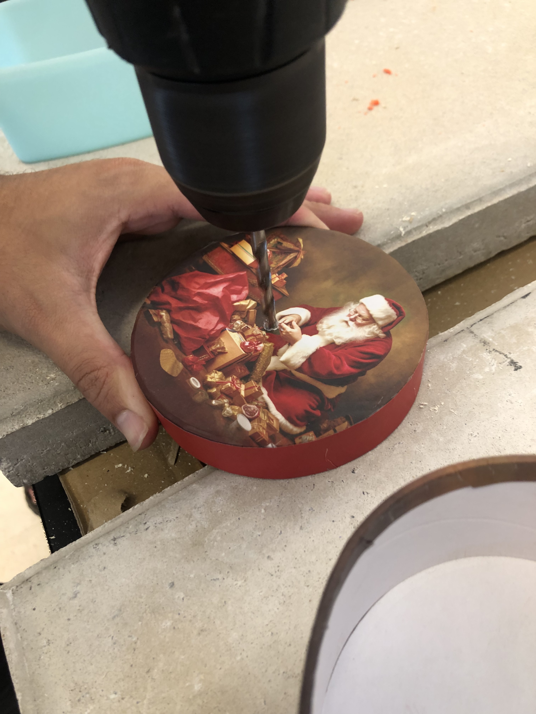

 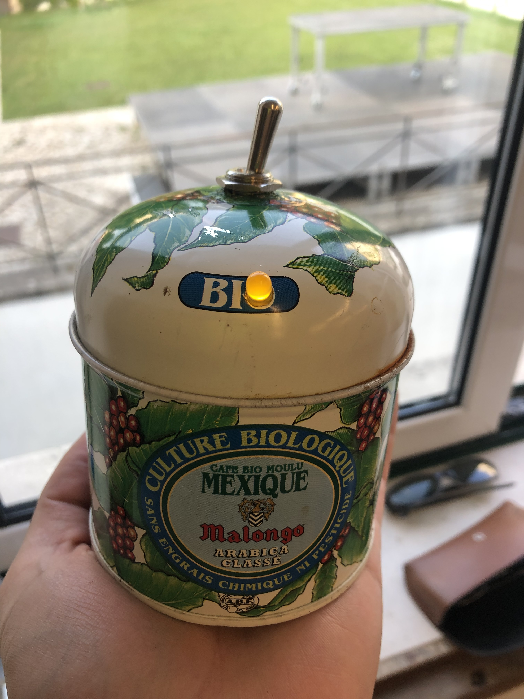
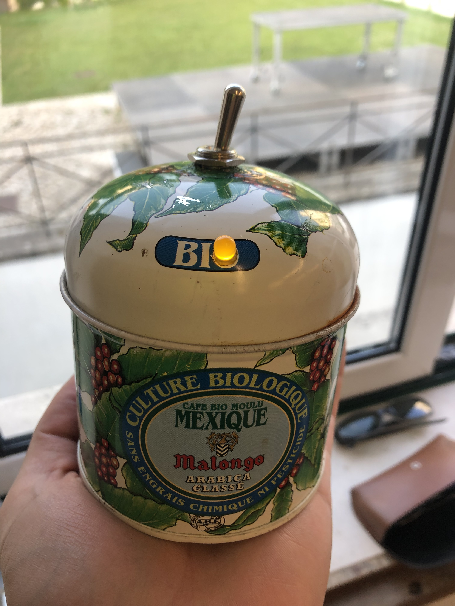

Constrói um PHOTOSYNTH
23 de Agosto 2025
Casa das Artes Bissaya Barreto, Coimbra
Nesta oficina vamos aprender a construir um PHOTOSYNTH 𓆙𓆙𓆙 um sintetizador que funciona com células fotossensíveis. Estas células transformam a intensidade de luz em sinal eléctrico que depois controla a frequência e a modulação do som gerado. Podes tocá-lo com a tua mão, aproximando-te ou afastando, de forma a entrar mais ou menos luz. Podes também usar uma lanterna ou outra fonte luminosa, para criar diferentes sons.
Contrói a tua caixa electro-acústica
14 de Setembro 2025
Escola do Povo no Festival Clarão, Sintra
Nesta oficina vamos aprender a soldar e a construir uma caixa electro-acústica feita com microfones piezo e molas. Tem uma saída de áudio mini-jack para poderes ligar directamente a uma coluna ou a pedais de efeitos.